Track Record & Trading Statistics (Part 1)
Building the three-tab performance workbook that turns your closed trades into an objective x-ray of how well you actually trade.
Run your account like a business: log every open and closed position, and let the spreadsheet compute your win rate, R-score, returns distribution, and equity curve. Update it weekly at the weekend, and the numbers become meaningful after ~1 year and robust after ~3.
The gist
- A track record is the professional's feedback x-ray: run the account as a BUSINESS, update it WEEKLY at the weekend when markets are closed, and treat maintaining it as mandatory (it is a requirement on the ITPM mentoring program).
- Statistics only become meaningful after ~1 year of trading and much more robust after ~3 years — don't over-read early numbers.
- The workbook has 3 TABS — Portfolio Monitor (open positions / unrealized PnL), Realized PnL (closed trades + stats), Portfolio Value (weekly NAV) — where WHITE cells are user entry and BLUE cells are formulas.
- Portfolio Monitor totals for the model book (13 positions, 7 long / 6 short): $ Gross Exposure 339,400.90, $ Net Exposure 93,356.70, % Net = Net/Gross = 27.51% (a dollar long bias), Unrealized PnL 19,976.61.
- Realized PnL summary: Win# 65 / Loss# 51 / Total# 116; Win% 56.03% / Loss% 43.97%; Win$ 181,370.18 / Loss$ 100,929.90 / Total$ 80,440.28; R-Score = Win$/Loss$ = 1.80.
- The returns distribution (5% bins) shows Average 6.35%, Median 4.62%, Av Pos 21.60%, Av Neg −13.09% — you want POSITIVE SKEW (big controlled winners, small losers) as the signature of good risk management.
- Portfolio Value = unrealized + realized − cumulative costs + cumulative deposit; deposit-adjusted Portfolio Return = (Vₜ − net_deposit)/Vₜ₋₁ − 1; a Portfolio Index based at 100 is the true equity curve.
- Performance stats: Mean Return Weekly 0.50% → Annual 29.42% by COMPOUNDING (1+weekly)^52 − 1; Total Return 57.22% (read off the INDEX, not raw dollars); Std Dev Weekly 2.44% → Annual 17.58% (×√52); Downside Deviation Weekly 1.48% → Annual 10.65%.
- This is PART 1 (the basic stats); Part 2 adds the Kelly criterion + simulations, trade-time-horizon distribution, max drawdown, and the gross Sharpe / Sortino / Calmar ratios.
Why keep a track record
- A track record is a trader's feedback loop — the objective x-ray of how you're actually performing.
- Maintaining it improves discipline and speeds progression through the competency hierarchy by exposing your style and your mistakes.
- Update it WEEKLY, ideally at the weekend when the market is closed; most of the raw data can be pulled straight from your broker.
- For ITPM mentoring students it is a mandatory requirement to keep your own track record.
The whole point is self-analysis: you can't improve what you don't measure. Anton frames the account as a business and the workbook as the instrument panel you review every weekend.
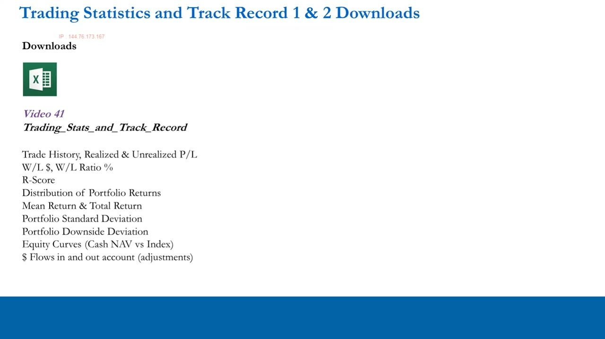
What Part 1 covers
- Track the LIVE portfolio for unrealized PnL, and the trade history for realized PnL.
- From realized PnL: dollar wins vs losses, percentage wins vs losses, R-score, and the distribution of realized returns.
- Aggregate unrealized + realized to monitor portfolio value, then derive mean/total return, standard deviation, downside deviation, and equity curves.
- Part 2 (next video) adds Kelly, max drawdown, and the Sharpe / Sortino / Calmar ratios.
The model workbook simulates a good, unleveraged ITPM student's portfolio after roughly one to two years of trading, built from real positions so the numbers are realistic.
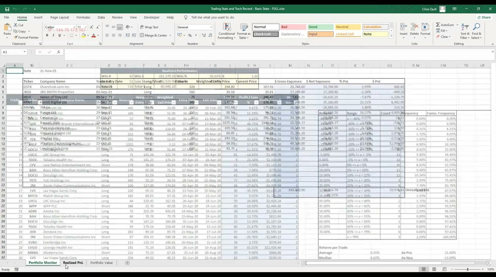
The workbook: three tabs, colour-coded cells
- Tab 1 — Portfolio Monitor: your live open positions and unrealized PnL.
- Tab 2 — Realized PnL: a log of every closed trade plus the summary statistics.
- Tab 3 — Portfolio Value: combines realized + unrealized PnL to track NAV over time.
- Convention throughout: WHITE cells require user entry, BLUE cells are automated formulas.
The colour rule is the key to using the sheet safely — you only ever type into white cells, and the blue cells cascade the results. It repeats on all three tabs.
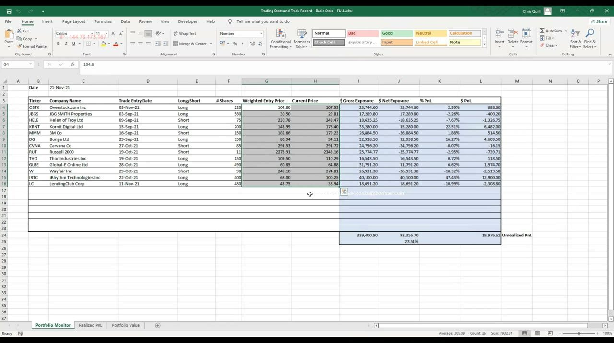
Portfolio Monitor: exposures and PnL
- $ Gross Exposure = Current price × Shares (the effective dollar weight of each position).
- $ Net Exposure = Gross × (+1 for longs / −1 for shorts); its sign tells you if the book is net long, net short, or neutral.
- % PnL: long = (Current − Entry)/Entry, negated for shorts; $ PnL is that move × shares.
- Model book: 13 positions (7 long / 6 short), Gross 339,400.90, Net 93,356.70, % Net = Net/Gross = 27.51%, Unrealized PnL 19,976.61.
The 27.51% net figure is a dollar long bias. Anton stresses that dollar exposure ignores volatility and beta (see the beta lesson, video 20) — it is a basic risk read, not the full picture.
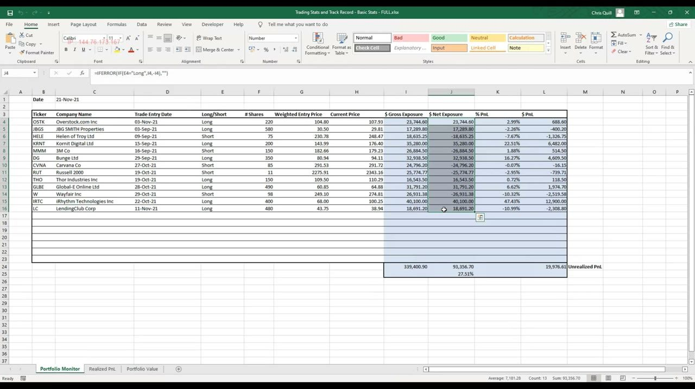
Reading position weightings against performance
- The largest position by gross exposure is the long iRhythm Technologies, running ~$13,000 profit at ~47%.
- Winning longs grow their exposure automatically as the price rises — and a well-managed winner is often added to as well.
- So the best long being the biggest position is expected; if it weren't, that mismatch would be worth investigating.
- Checking whether weightings make sense given performance is the core habit this tab is meant to build.
This is the analytical mindset Anton wants: don't just read totals, ask whether the shape of the book is consistent with good management — and dig into any position that looks out of place.
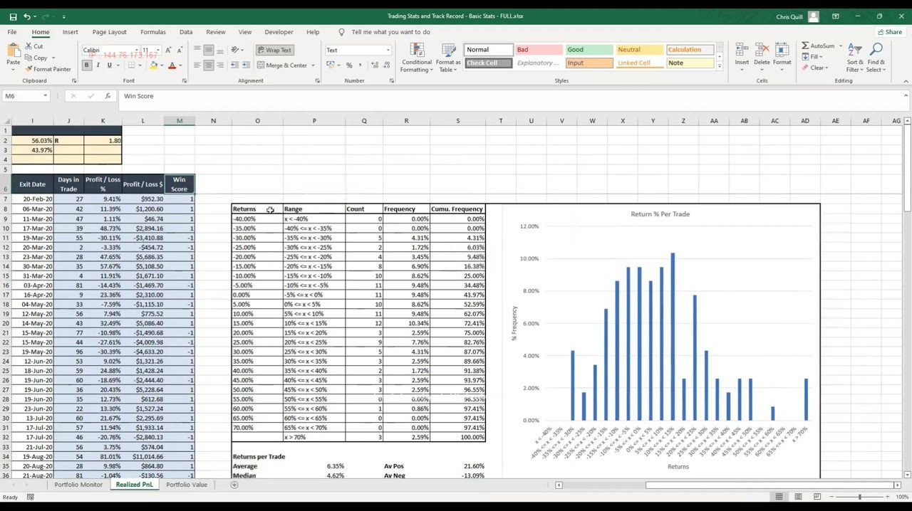
Realized PnL: the closed-trade log
- Every fully closed position is logged with ticker, name, long/short, shares, weighted entry & exit prices, and entry & exit dates.
- Days in Trade = exit date − entry date (CALENDAR days): 20–60 trading days ≈ 30–90 calendar days.
- % and $ Profit/Loss per trade use the same long/short IF-logic as the monitor tab.
- Win Score flags each trade +1 (profit) or −1 (loss).
The days-in-trade conversion matters: the target one-to-three-month window is 20–60 trading days, which shows here as 30–90 calendar days, so a trade running near 90 days is at the top of your intended horizon.
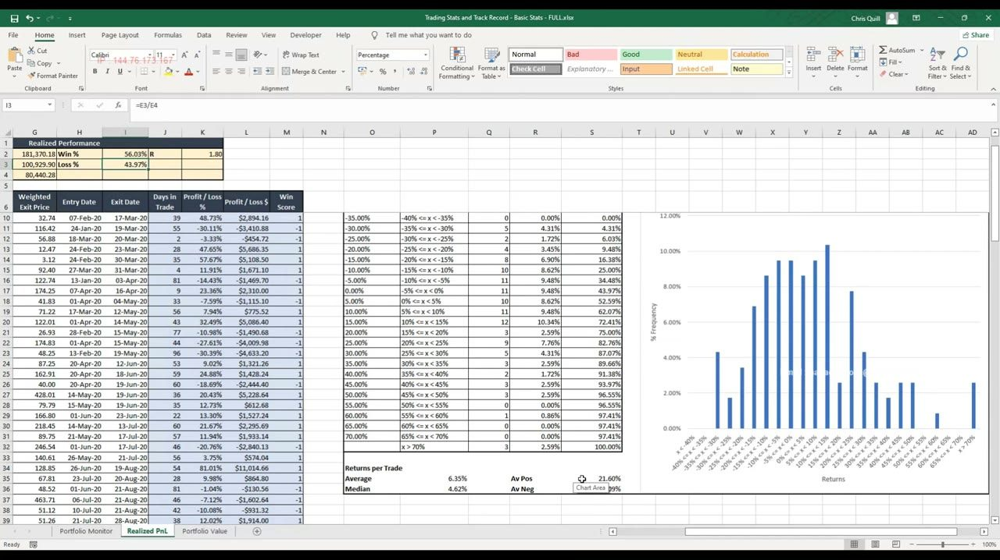
Realized summary statistics
- Over ~2 years: Win# 65 / Loss# 51 / Total# 116; Win% 56.03% / Loss% 43.97%.
- Win$ 181,370.18 / Loss$ 100,929.90 / Total$ 80,440.28.
- R-Score = Win$ / Loss$ = 1.80 — profits have been 1.8× the losses.
- Guide: an R-score of 1.5–2 is good and above 2 is very good; a 3× target-to-stop discipline caps the realistic ceiling.
Fine margins compound: even a few percent more winners than losers, combined with winners larger than losers, drives the account. Anton reminds you these stats only become valid after a decent number of trades over time.
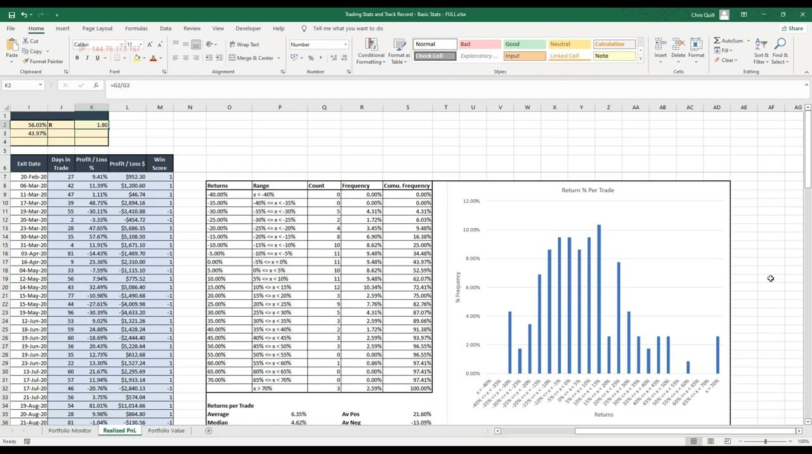
The returns distribution and positive skew
- A histogram of trade returns in 5% bins, with Average 6.35% and Median 4.62%.
- Av Pos 21.60% vs Av Neg −13.09% — winners are on average much bigger than losers.
- You want POSITIVE SKEW: big controlled winners with small losers, the fingerprint of good risk management.
- Model book: no single trade lost more than ~35%, yet several made 70%+; ~28% of trades gained >15% versus ~16% losing >15%.
Negative skew (big losers) means stops aren't set or are being ignored; anemic winners mean cutting winners too early. Positive skew is the visual proof that stops and targets are being respected — though a few 30–35% losers show there's still room to cut losses sooner.
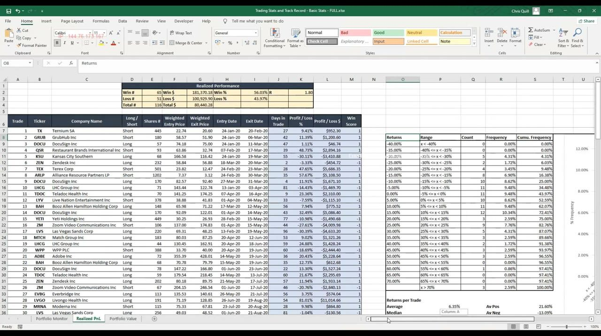
Filtering the trade log to find strengths and weaknesses
- Add a filter (Data → Filter) and sort by % PnL to surface the worst and best trades.
- Sort by Days in Trade to spot positions held too long — e.g. a short Harley Davidson run for 87 days sits at the top of the intended window.
- Very short trades (a few days) clustered in March–April 2020 were justified by the COVID VIX spike of ~40–80, not a mistake.
- Filter by entry date (e.g. Feb–Apr 2020) to judge performance in a specific regime — the model coped well: 9 winners to 3 losers with above-average profits.
Summary stats point you at questions; filtering the log answers them. Remember to re-sort by trade number afterwards so the sheet returns to its original entry order.
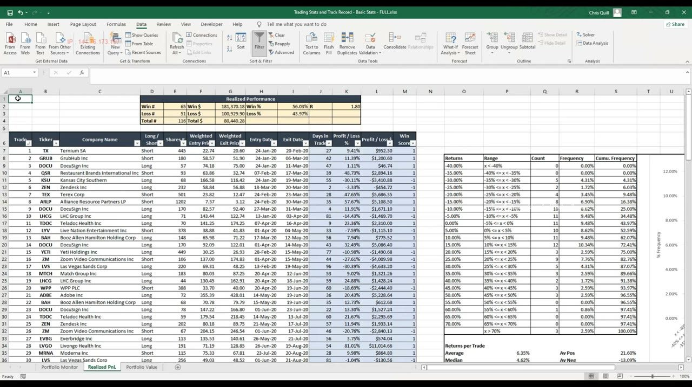
Portfolio Value: the weekly NAV table
- Weekly white-cell inputs: date, unrealized PnL, realized PnL, cumulative trading costs, deposits, withdrawals.
- Blue formulas compute net deposit, cumulative deposit, portfolio value, portfolio return, and portfolio index.
- Portfolio Value = unrealized + realized − cumulative costs + cumulative deposit.
- Reconcile to your brokerage account each week; if the sheet and broker disagree, trust the broker (it captures dividends and other income).
Unrealized PnL is pulled from Portfolio Monitor cell L24 and realized PnL from Realized PnL cell G4. Do this weekly — daily is unrealistic upkeep and monthly is too sparse for meaningful statistics.
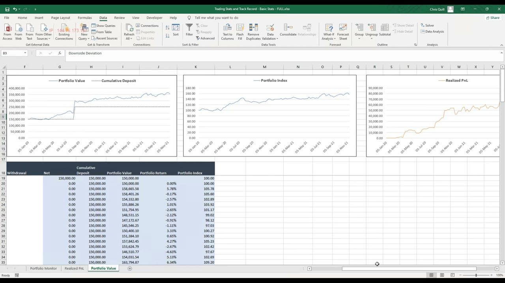
Deposit-adjusted returns and the equity curve
- The dollar value rose from ~$150,000 (Jan 2020) to ~$350,000 (Nov 2021), but a $100,000 deposit in Aug/Sep 2020 distorts that.
- Performance must be measured independently of deposits and withdrawals — you can't manufacture return by adding cash.
- Portfolio Return = (Vₜ − net_deposit)/Vₜ₋₁ − 1 strips out the cash flows; a Portfolio Index based at 100 compounds those clean returns into the equity curve.
- The index reads 157 in Nov 2021 → Total Return 57.22% (off the index, not the raw dollars), with the worst stretch only ~145→125 (Jul–Oct 2020).
The first chart overlays portfolio value against a cumulative-deposit line so cash injections don't masquerade as performance; the index chart and the +$80k realized-PnL curve give the clean read. A 57% unleveraged return over 22 months with modest drawdown is a well-managed book.
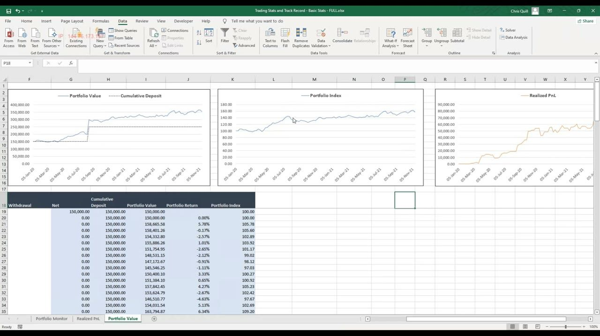
Return and risk statistics
- Mean Return Weekly 0.50% → Annual 29.42% by COMPOUNDING: (1 + weekly)^52 − 1 (52 weeks/year).
- Total Return 57.22%, computed from the index end/start − 1 so deposits and withdrawals are neutralised.
- Std Dev Weekly 2.44% → Annual 17.58% by ×√52.
- Downside Deviation Weekly 1.48% → Annual 10.65% — the standard deviation of NEGATIVE weeks only = √(Σ min(r,0)² / N).
Annualising is not the same for level and volatility: returns compound to the power 52, but the standard deviation scales by √52. A ~29% annual return against ~18% annual volatility is a solid unleveraged risk/return profile.
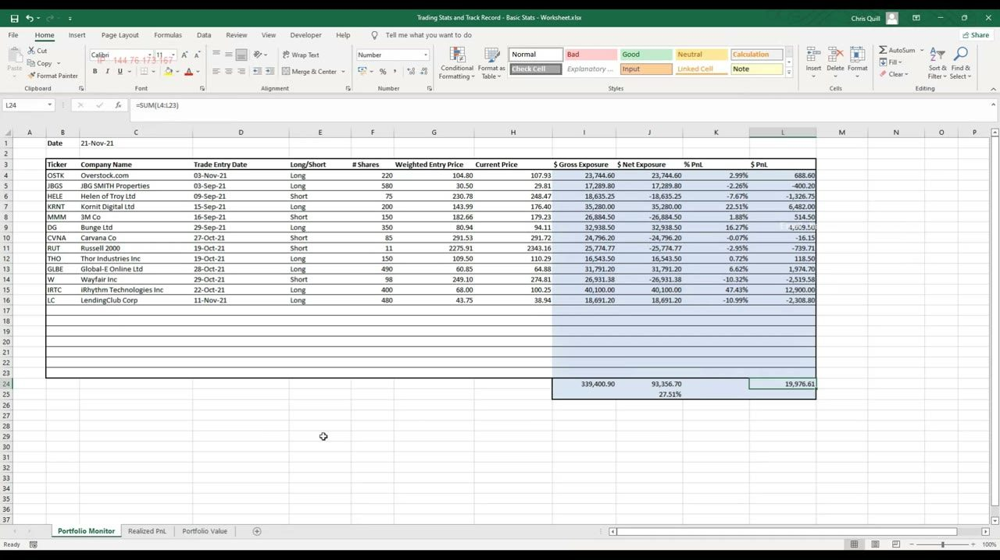
Downside deviation and what feeds Part 2
- As traders we only care about controlling downside volatility, not upside — hence a statistic built from negative returns only.
- In Excel it's an array formula: √(SUMSQ(IF(J:J<0, J:J)) / COUNT(J:J)), entered with Ctrl+Shift+Enter.
- On its own the number means little; it's useful for comparing books and, crucially, as the denominator of the Sortino ratio in Part 2.
- Downside deviation converts every positive week to zero and takes the spread of what remains.
Standard deviation punishes big up-weeks as if they were risk; downside deviation fixes that by measuring only the losing weeks — which is exactly the volatility a portfolio manager wants to control.
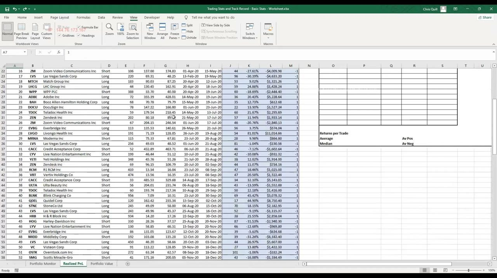
Building the exposure formulas from scratch
- Weighted entry price = the share-weighted average across legs, e.g. 108×(150/220) + 97.94×(70/220) = $104.80.
- Gross Exposure: =H4*F4 (current price × shares); Net Exposure: =IF(E4="long", I4, −I4).
- % PnL: =IF(E4="long", (H4−G4)/G4, −((H4−G4)/G4)); $ PnL: =IF(E4="long", (H4−G4)*F4, −((H4−G4)*F4)).
- Aggregate with SUM over a generous range (e.g. I4:I23) so the totals don't need editing as the book changes size.
Every long/short-sensitive figure is one IF statement that flips the sign for shorts. Your broker usually gives the weighted average entry directly, so you rarely need to compute it by hand.
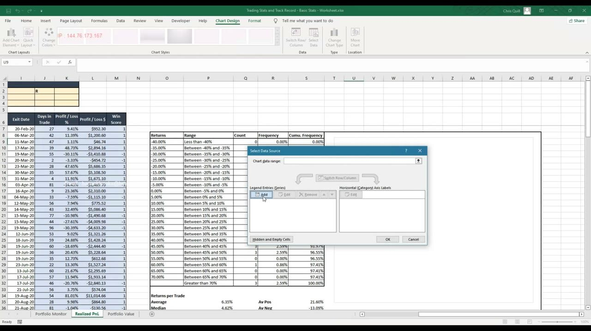
Building the realized log and value sheet
- Days in Trade: =I7−H7 (calendar days); Win Score: =IF(L7>0, 1, −1).
- Distribution uses COUNTIF / COUNTIFS over 5% intervals (−40% up to 70%), then frequency = count / SUM(counts).
- Summary cells use COUNTIF, SUMIF and ABS — e.g. losses shown positive via =ABS(SUMIF(M:M,−1,L:L)); R-score = G2/G3.
- Value sheet: Net Deposit =E−F; Cumulative Deposit runs additively; Portfolio Value =B+C−D+H; Portfolio Return =(I20−G20)/I19−1; Index starts at 100 and grows =K19*(1+J20).
References run to row ~10,000 so charts and totals auto-update as new trades are added — you only ever copy the blue formulas down alongside new white-cell rows.
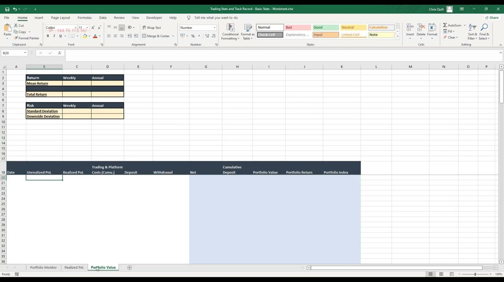
Caveats and what comes next
- Dollar exposure ignores beta and volatility — pair this with the beta lesson for the real risk picture.
- Reconcile the workbook to your brokerage account, and keep all PnL in a SINGLE currency (add FX columns if you trade non-USD names); the sheet is US-stock oriented.
- The workbook is deliberately simple, not a full accounting system, but it's easy to extend for your own needs.
- Part 2 adds Kelly + simulations, the trade-time-horizon distribution, max drawdown, and the gross Sharpe / Sortino / Calmar ratios.
This is the basic-statistics foundation. If maintaining it feels like too much, ITPM keeps professional, audited performance data on its own traders — but building it yourself is the fastest way to learn where you're strong and weak.
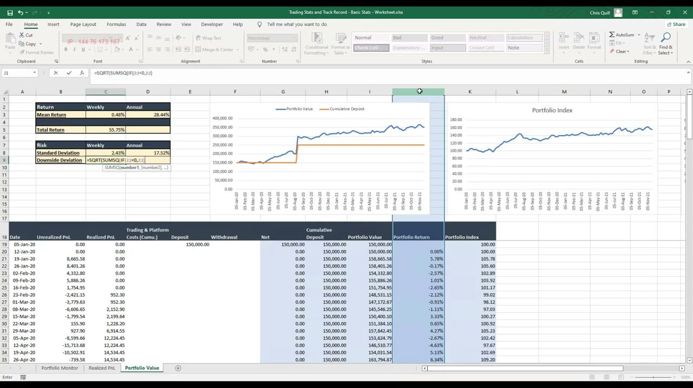
Glossary
- Track recordThe ongoing, objective log of a trader's positions and results — the professional's feedback x-ray. Meaningful after ~1 year, robust after ~3.
- Unrealized PnLMarked-to-market profit/loss on still-open positions; not yet booked into the account. Lives on the Portfolio Monitor tab.
- Realized PnLProfit/loss on fully closed trades, actually recognised into the account. Model book total: $80,440.28.
- $ Gross ExposureCurrent price × shares for a position; summed for the book (model: 339,400.90). The effective dollar weighting.
- $ Net ExposureGross × (+1 long / −1 short); its sign shows net long/short/neutral. Model: 93,356.70.
- % Net ExposureNet / Gross exposure (model: 27.51%), a quick read of dollar long/short bias — before considering beta.
- Win ScorePer-trade flag: +1 for a profit, −1 for a loss. =IF($PnL>0, 1, −1).
- R-ScoreAggregate dollar wins ÷ aggregate dollar losses (model: 1.80). 1.5–2 is good, above 2 very good.
- Positive skewA returns distribution with big controlled winners and small losers — the visual signature of good risk management.
- Days in TradeExit date − entry date in CALENDAR days. The 20–60 trading-day window ≈ 30–90 calendar days.
- Portfolio ValueUnrealized + realized PnL − cumulative costs + cumulative deposit; the weekly NAV of the account.
- Deposit-adjusted return(Vₜ − net_deposit)/Vₜ₋₁ − 1 — return with cash flows stripped out, so deposits/withdrawals don't fake performance.
- Portfolio IndexThe clean returns compounded from a base of 100 (model ends at 157 → 57.22% total return); the true equity curve.
- AnnualisingReturn compounds: (1+weekly)^52 − 1 → 29.42%. Volatility scales: weekly ×√52 → 17.58%.
- Downside deviationStandard deviation of negative weeks only: √(Σ min(r,0)² / N). Weekly 1.48% → annual 10.65%; feeds the Sortino ratio in Part 2.
- Weighted entry priceShare-weighted average fill across legs, e.g. 108×(150/220) + 97.94×(70/220) = $104.80. Usually given by the broker.